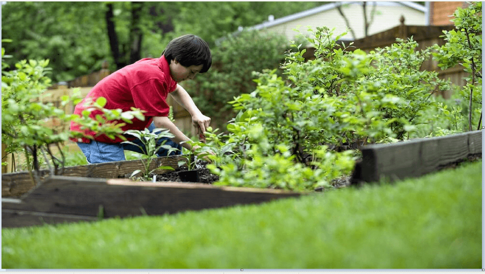
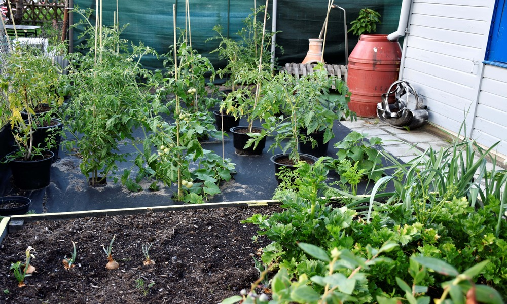
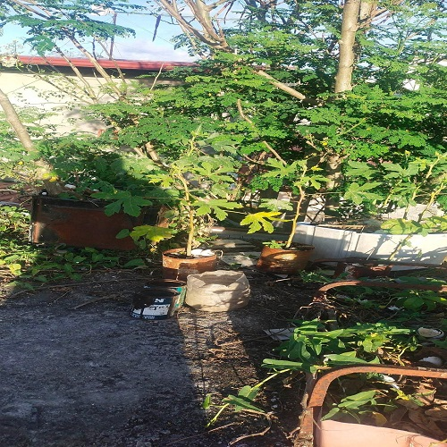
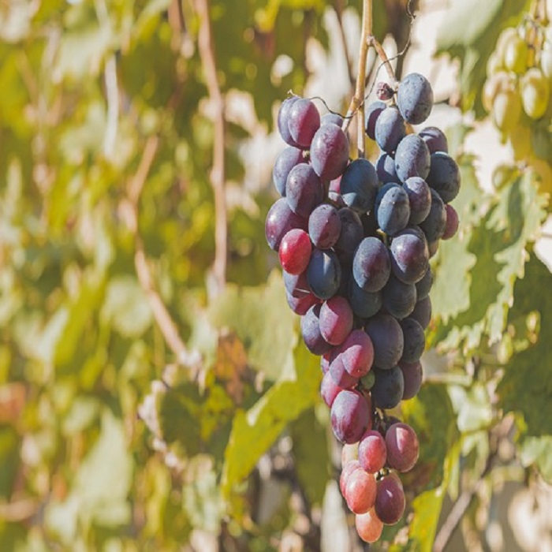

Overview
Purpose
The purpose of the website is to promote home gardening that will help people plant their own food. This will include instructions on how to plant vegetables that can be used for personal consumption. It will also include ideas for rooftop planting and vertical gardening. This may also include ideas for hydroponic farming. The site will also promote proper waste disposal and converts waste product to be used as fertilizer for the plant. This site will encourage people to be in one with nature by taking part in its preservation by contributing to the green environment. This site will not only encourage but will also educate visitors in living a healthy lifestyle that will prolong life and to have a meaningful family experience in their own backyard.
Audience
The site will attract families that are interested in planting and cooking fresh vegetables for their consumption. Individuals who are into home gardening will also visit the website for ideas on how to grow plant and what plant may be used for personal consumption. This site is also intended for home developers and urban planners to incorporate planting in their home design that will reduce heat and allow home owners to grow plant. Government agency may also visit the site to help in the promotion of the idea of home gardening for a sustainable food source for the community at large.
Branding
Website Logo
Style Guide
Color Palette
Palette URL: https://coolors.co/30891a-62a7a0-ee6352-deb72b-ffffff| Primary | Secondary | Accent 1 | Accent 2 |
|---|---|---|---|
| [#396E94] | [#E7C24F] | [#A43312] |
Typography
Heading Font: ["Labrada"]
Paragraph Font: ["Faustina"]
Normal paragraph example
People would want to visit the site to get an idea about home gardening and its benefit to the health and family as well as the environment.
Colored paragraph example
They will come to know the joy in planting their own food as well as recreational activity they will be able to do with their family
Navigation
Site Map
Content
Home page
[One of the things you can do when you are at home that is worthwhile is to plant and grow your own food. It provides you with opportunity to put the green nature into your home providing your home with fresh air and fresh food for your family consumption. You will find peace and tranquility while you work on your garden, exercise your body and enjoy the warmth of sun when you’re out gardening. When the pandemic strike it has given a lot of opportunities for home owner to plant and grow food at home. Whether you are living in the countryside or the suburb planting let you feel closer to nature. It always has been a household idea and until recently people are becoming more interested in planting their own food to have organic produce and boost immunity and have positive mood. Growing plants may prove to be difficult, it will require dedication and patience. A little bit of hard work coupled with a lot of caring is necessary to be successful no matter how large or small your area maybe. In planning and choosing the plant to cultivate depends on the size of your area or the type of food you eat. If the area is small. Small plants like onion, tomatoes , lettuce and the like will do, they can be planted on pots or small cans and can be placed almost anywhere where there is enough sunlight. ]
Images for the Home page

[Location]
[Another thing to consider in planting your plant is the location. Plants needs good amount of sunlight for it to grow and produce, typically between 6 to 8 hours. If your house has access to your roof top it is actually an ideal place. not only that your plant has enough sunlight but it will also help in preventing heat to your home. What is good about home gardening is you only need ample area to begin with. You may consider planting in your front yard or the backyard. Another option you can do is vertical gardening. Vertical gardening can maximize the space if you have a small one. You can use vertical gardening to plant edible food. Cover your wall, or beautify your balcony. ]
Images for the Page 2
 [Benefits of Planting]
[ 1. Gardening helps nature replenish. The world we live in now are producing lots of greenhouse gases. Plants absorb these gases and then produce clean breathable air for us to inhale. It also improves biodiversity specially if we are only using organic fertilizer. 2. Composting One way to do this is to use all biodegradable waste as fertilizer. examples are vegetable leaves, fruit skin and egg shells. These can be used as fertilizer so just keep them in one container or a compost bin. Composting on its own has lots of health benefits. 3 Healthy Food Growing your home garden will have healthy benefits because you will producing fresh fruit and vegetables of your chosen variety that you will enjoy. It also saves time going to the grocery and reduce carbon emission produce by the cars. Gardening may cost a little bit but will save you a lot in the long run if properly maintained 4. Medicinal plants You can also plant medicinal plant like oregano that helps in common colds and coughs. and also helps in constipation and diarrhea. Another example is Ginseng . It can improve brain function and erectile dysfunction. It can also boost the immune system and lower blood sugar. 5. Health benefits While the sun provide heat for the plants to grow it also provides vitamin D for human that is essential for our health and it comes free. Vitamin D has more specific benefits for us. These are a few of them: It helps regulates insulin levels to prevent diabetes. It provides a solid protective barrier against flu. Vitamin D can influence genes that can generate cancer. It is vital for better lung function and stronger cardiovascular health. It is suitable for babies and pregnant women. 6. Gardening can be a fun family activity Gardening also provides an alternative activity for our children today who are now stuck on their gadgets screen. Aside from feeding pets gardening will add responsibility to children. It will also teach them the importance of growing their own food for consumption. Gardening may be bit of hard work for some but the benefits is healthy and rewarding. Maintaining a garden will develop a sense of responsibility for you and every family member. As we go about maintaining our garden by removing unnecessary weeds to help our plant grow. It gives us the opportunity to be responsible and teach our children of doing their responsibility. 7. Exercise When we are gardening, we exert a lot of effort and physical activity so it is also an alternative to exercise our body and removes fats from our skin. ]
Images for the Page 3
Wireframes
Create three wireframes for your site. One for each page and list them here
Home
[Any additional details about home that the wireframe does not make clear]
[Page 2]
[Any additional details about page 2 that the wireframe does not make clear]
[Page 3]
[Any additional details about page 3 that the wireframe does not make clear]